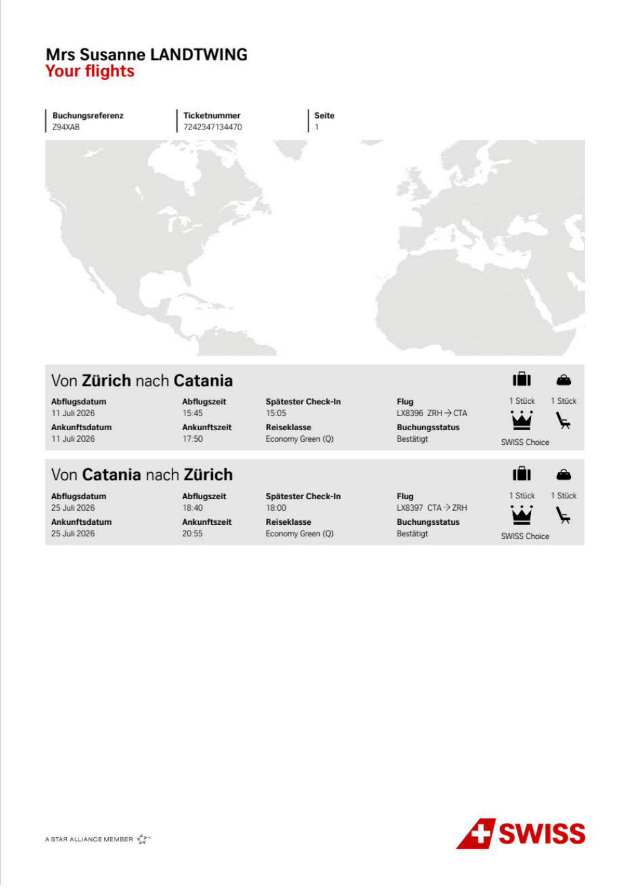
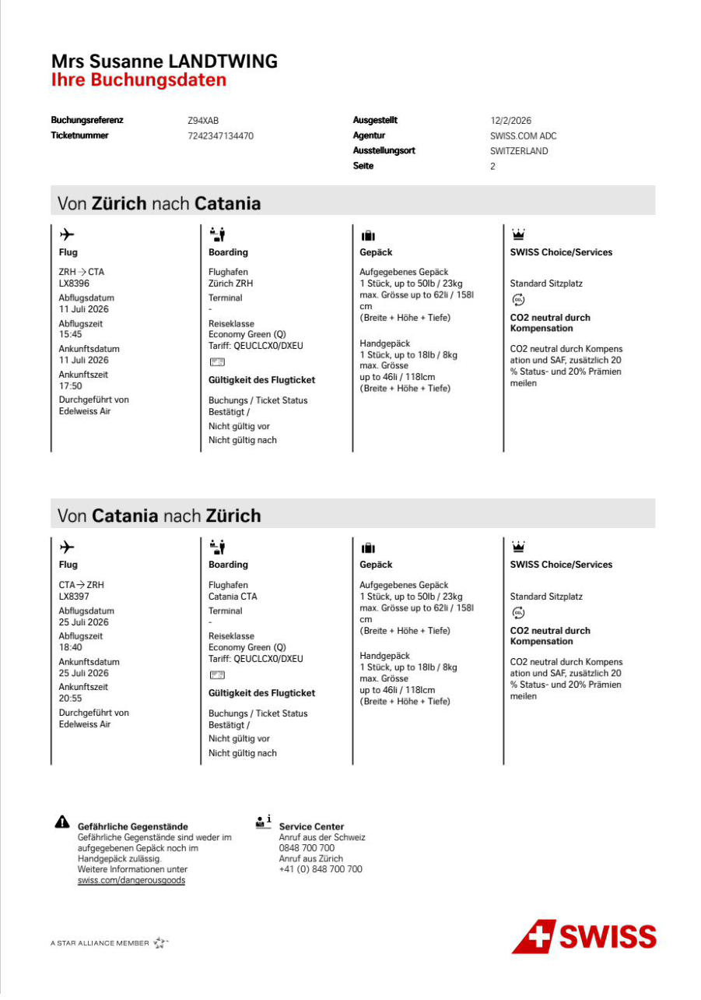
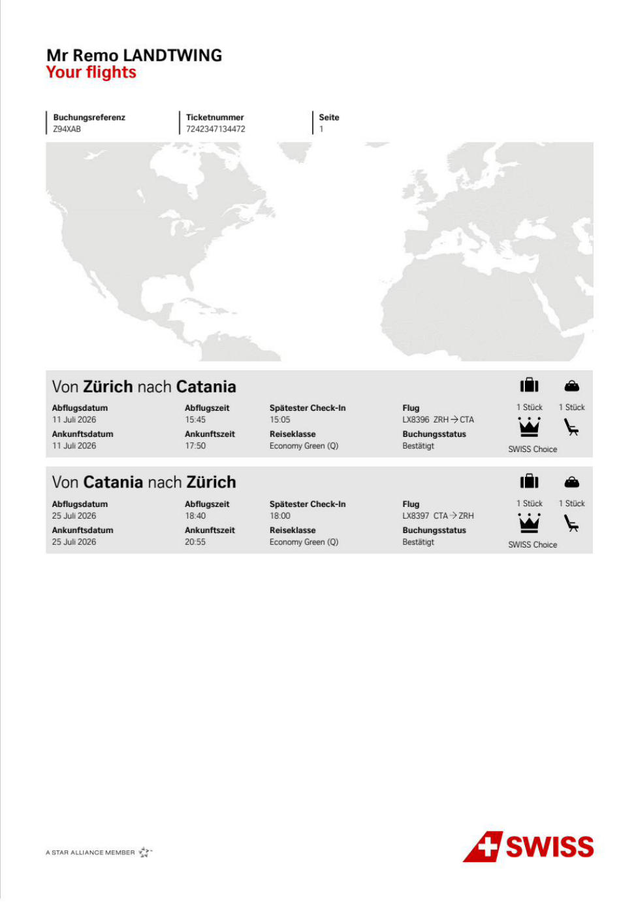
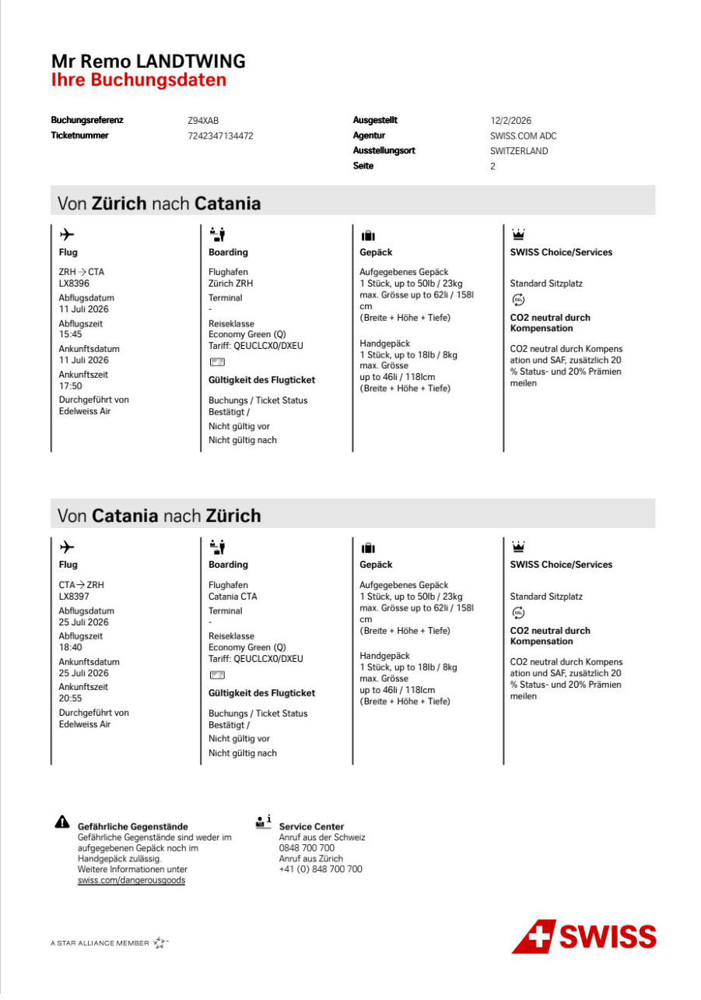
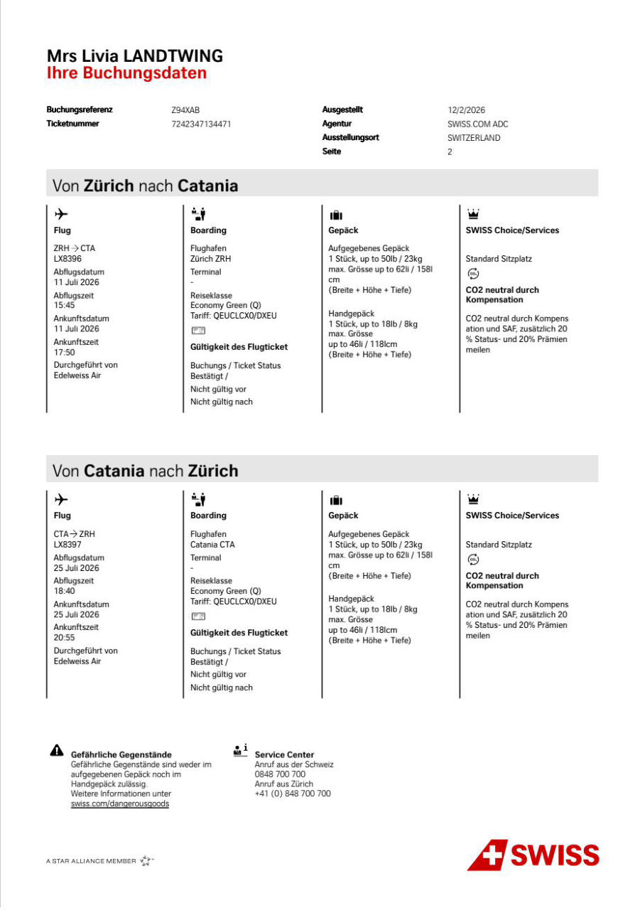

Sizilien 2026
Wetter in Siracusa
Auf einen Blick
Bargeld mitnehmen
Flüge
Hinflug
Hinflug Jana (separat)
Rückflug (alle 5)
Check-in & Service
Schnellzugriff (QR)
Mit der Handy-Kamera scannen → öffnet SWISS direkt. Der offizielle Boarding-Pass (mit Barcode) kommt nach dem Check-in in die SWISS-App / Wallet.
Gepäck





Villa del Mito


Unterkunft
Vor Ort (bar)
Mietwagen
Reservierung
All Inclusive
Ausflüge
 © Wikimedia
© WikimediaOrtigia
Die historische Altstadt-Insel von Siracusa: verwinkelte Gassen, der barocke Dom an der Piazza Duomo und Cafés direkt am Meer. Abends die schönste Bummelmeile.
 © Wikimedia
© WikimediaParco Neapolis
Antiker Archäologiepark mit dem riesigen Griechischen Theater und dem „Ohr des Dionysios". Im Sommer finden hier echte griechische Tragödien statt. Eintritt ca. € 13.50.
 © Wikimedia
© WikimediaNoto
Die „Hauptstadt des sizilianischen Barock" – nach dem Erdbeben 1693 komplett in goldenem Stein neu erbaut. Prachtvolle Treppen, Kirchen und Eisdielen. Ideal für den späten Nachmittag.
 © Wikimedia
© WikimediaMarzamemi
Malerisches Fischerdorf an der Südspitze – bunte Boote, eine ehemalige Thunfischfabrik (Tonnara) und die romantische Piazza Regina Margherita. Perfekt für ein Mittagessen am Wasser.
_-_panoramio.jpg?width=900) © Wikimedia
© WikimediaVendicari & Cala Mosche
Naturreservat mit unberührten Traumstränden, Flamingos und einer alten Tonnara. Cala Mosche gilt als einer der schönsten Strände Siziliens – früh kommen, begrenzte Plätze!
 © Wikimedia
© WikimediaÄtna
Europas grösster aktiver Vulkan (3.300 m). Geführte Tagestouren bis zu den Gipfelkratern oder per Seilbahn. Festes Schuhwerk & warme Jacke mitnehmen – oben ist es kühl. In der Hochsaison früh buchen!
 © Wikimedia
© WikimediaCavagrande del Cassibile
Spektakuläre Schlucht mit türkisen Naturpools zum Baden. Der Abstieg ins Tal ist steil (gute Schuhe!), aber die smaragdgrünen Becken sind die Belohnung. Ein Geheimtipp für heisse Tage.
 © Wikimedia
© WikimediaBootsvermietung & -touren
Das Meer von der Wasserseite erleben: kleine Motorboote gibt es ab dem Hafen von Ortigia auch ohne Bootsführerschein (Einweisung inklusive). Schönste Ziele: die Grotten von Ortigia, die Bucht Pillirina und das Naturschutzgebiet Plemmirio. Wer entspannen will, bucht eine Tour mit Skipper.
Essen
 © Wikimedia
© WikimediaCortile Spirito Santo
Feine, kreative sizilianische Küche von Chef Giuseppe Torrisi – im Michelin-Guide gelistet. Elegant, kunstvoll angerichtet, ein langer Genuss-Abend (gut 3 Stunden). Via Salomone 19.
 © Wikimedia
© WikimediaDon Camillo
Klassiker im Herzen von Ortigia – raffiniert, aber gastfreundlich. Bekannt für sein Fisch-Degustationsmenü und die grosse Weinkarte. Reservierung über TheFork.
 © Wikimedia
© WikimediaLa Terrazza
Mediterrane Küche mit Terrassen-Atmosphäre – schön für einen entspannten Abend mit Aussicht. Tisch am besten vorab über TheFork oder telefonisch sichern.
💡 In der Hochsaison (Juli) sind die guten Adressen schnell ausgebucht – mindestens 2 Wochen im Voraus reservieren.
To-do vor der Reise
- Zugticket ZRH Flughafen lösenSBB App · HB → ZRH · ~45 Min.
- Schlüsselübergabe mit Nunzio koordiniereneinige Tage vor 11. Juli
- Restaurants reservierenCortile Spirito Santo ★ · Don Camillo · La Terrazza (min. 2 Wochen vorher)
- Ätna-Tour buchenViator / GetYourGuide · Hochsaison → jetzt!
- Online Check-in SWISSab 24 Std vor Abflug · swiss.com
- Bargeld besorgen€ 500 Kaution + € 350 Kurtaxe (bar) + Sixt € 300 (Karte)
- Pässe gültig prüfen + Führerschein Jostfür alle 5 Personen